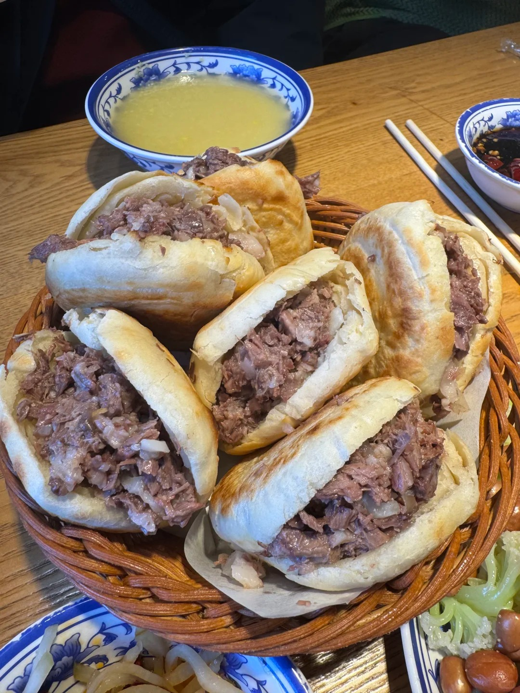
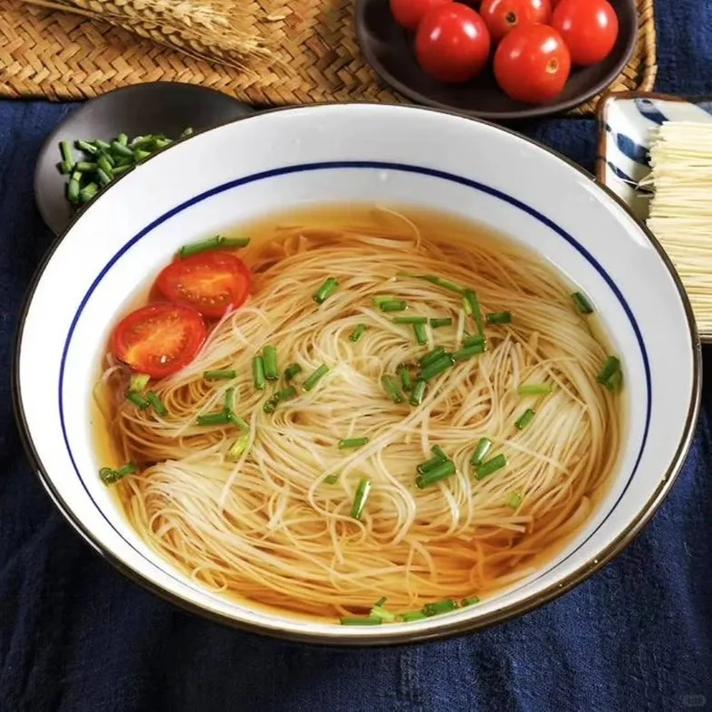
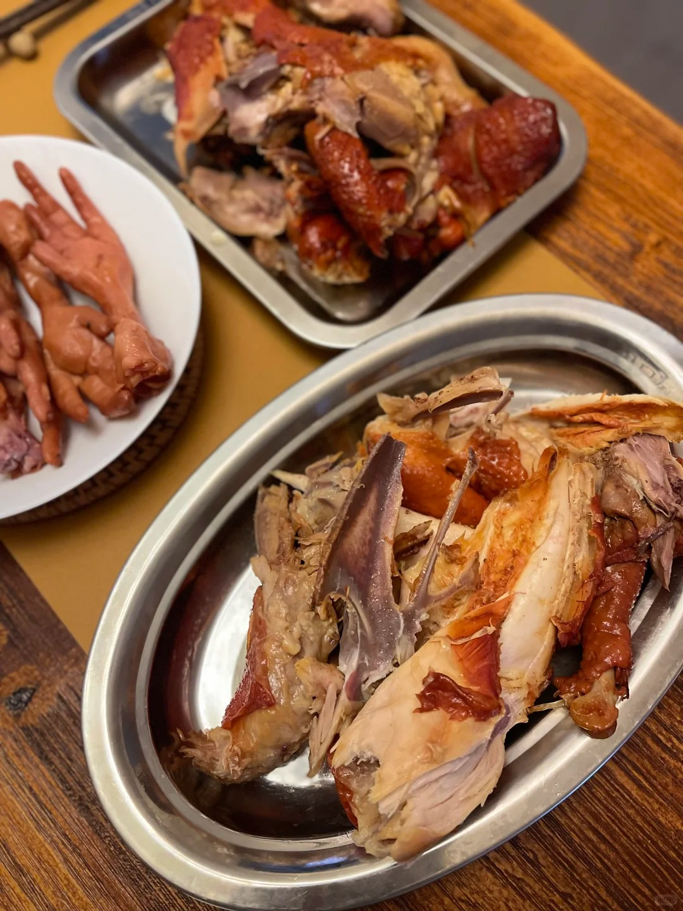
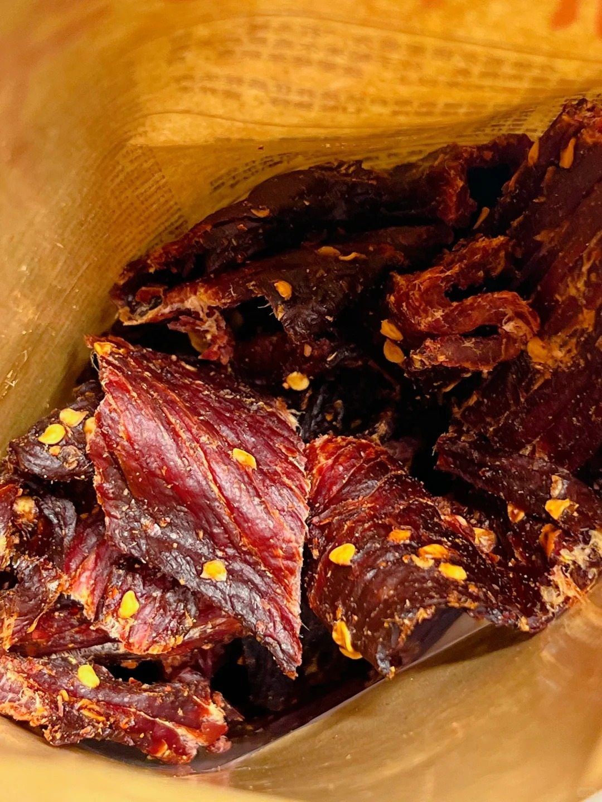
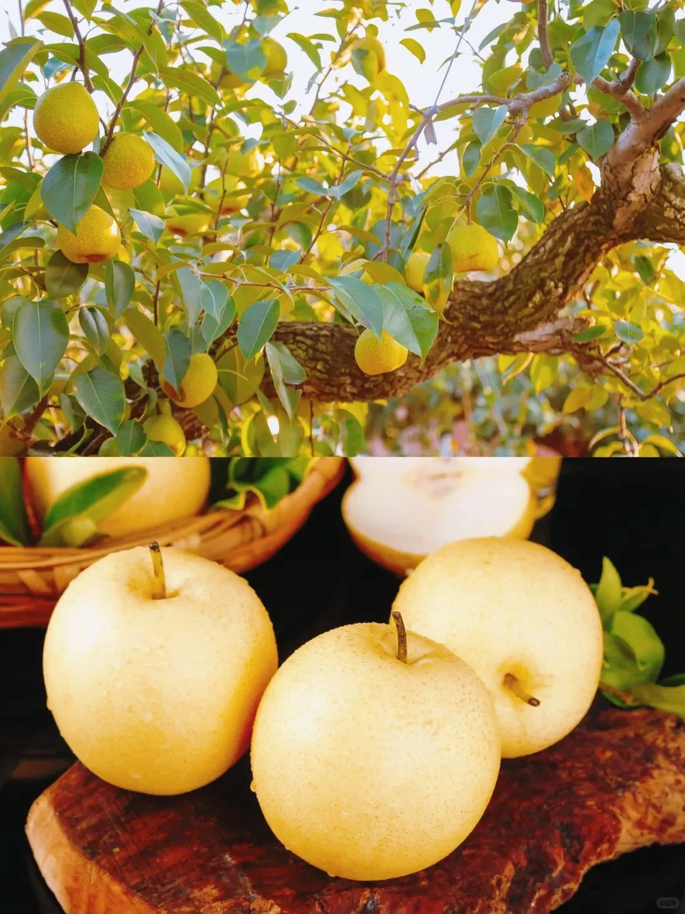

Culinary Traditions
From Imperial Banquets to Street Side Snacks

Zhengding Eight Bowls
A heritage of the Northern Song Dynasty, this traditional set of eight steamed dishes features pork, lamb, and vegetables. Each bowl is meticulously prepared to ensure a balance of flavors, symbolizing prosperity, harmony, and the warm hospitality of Shijiazhuang.

Donkey Meat Burger
A legendary Hebei snack featuring a crispy, flaky pastry known as "Huoshao," stuffed with succulent, slow-cooked donkey meat and savory green peppers. It remains the ultimate local comfort food, enjoyed at any time of the day.

Gaocheng Palace Noodles
Known as "Gongmian," these incredibly thin and hollow noodles were once a prized tribute favored by the imperial palace. Renowned for their delicate texture and high nutritional value, they are a testament to the skill of local artisans.

Wuji Smoked Chicken
Prepared with a secret blend of herbs and spices, then smoked to golden perfection, this chicken is prized for its aromatic skin and tender, savory meat. It offers a deep, sophisticated flavor profile that has been refined over generations.

Jinzhou Beef Jerky
A century-old air-dried delicacy from Jinzhou. It is lean, chewy, and bursting with a rich, natural beef flavor. This protein-packed snack has become a favorite souvenir for travelers looking for a genuine taste of the region.

Zhaoxian Xuehua Pear
Often called "Snow Pears," these are world-famous for their impressive size, translucent flesh, and crisp, honey-like sweetness. They are not only a refreshing dessert but also deeply rooted in the agricultural pride of Zhaoxian.